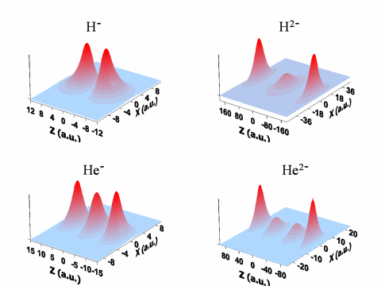

Sabre Kais Group
Quantum Information and Quantum Computation
Critical Phenomena at the Large Dimensional Limit
We have established an analogy between symmetry breaking of electronic structure configurations and quantum phase transitions at the large dimensional limit. Furthermore we have developed the finite size scaling method for quantum systems. In this case, the finite size corresponds not to the spatial dimension but to the number of elements in a complete basis set used to expand the exact wave function of a given Hamiltonian.

The electronic orbitals for the ground states of charged atoms in super-intense laser fields calculated by dimensional scaling method. The presentation is given in a plane passing through the axis of the field taken as polar axis z.
We have shown that symmetry breaking of electronic structure configurations at the large-D limit is completely analogous to the standard phase transitions and critical phenomena in statistical mechanics. For N-electron atoms in weak magnetic and electric fields at the large dimension limit, this analogy is shown by allowing the nuclear charge to play a role analogous to temperature in statistical mechanics.
Symmetry breaking of the molecular electronic structure configurations at the large dimension limit show similar phase transitions. For the hydrogen molecular ion the analogy to standard phase transitions was shown by allowing the inverse internuclear distance to play a role analogous to temperature in statistical mechanics.
We have established the role of the inter-electron Coulomb repulsion in giving rise to different electronic structures and the distinction between a continuous deformation of one structure into another versus a discontinuous, so called, first order, transition, where two isomers can coexist.
Results for linear three-atom and planar four-atom molecules show rich phase diagrams with multicritical points. Although these models and the phase diagrams are correct only at the semiclassical limit, the result were used as a guide to investigate symmetry broken solutions and critical behavior of the exact Hamiltonian at D=3.
-
"Critical Phenomena for Electronic Structure at the Large-Dimension Limit", P. Serra and S. Kais, Phys. Rev. Letters 77, 466-469 (1996)
-
"Multicritical Phenomena for the Hydrogen Molecule at the Large- Dimension Limit", P. Serra and S. Kais, Chem. Phys. Letters 260, 302-308 (1996)
-
"Phase Transitions for N-Electron Atoms at the Large-Dimension Limit", P. Serra and S. Kais, Phys. Rev. A 55, 238-247 (1997)
-
"On the Crossing of Electronic Energy Levels of diatomic Molecules at the Large-D Limit", Q. Shi, S. Kais, F. Remacle and R.D. Levine, J. Chem. Phys. 114, 9697-9705 (2001).
-
"Electronic Isomerism: Symmetry Breaking and Electronic Phase Diagrams for Diatomic Molecules at the Large-Dimension Limit", Q. Shi, S. Kais, F. Remacle and R.D. Levine, CHEMPHYSCHEM 2, 434-442 (2001)
-
"Quantum Criticality At The Large Dimensional Limit: Three-Body Coulomb Systems", Q. Shi and S. Kais, Int. J. Quantum Chem. 85, 307-314 (2001).
-
"Electron localization-delocalization transitions in dissociation of the C4 anion: A large-D analysis", Qicun Shi,Sabre Kais and Dudley R. Herschbach, J. Chem. Phys. 120, 2199-2207 (2004).